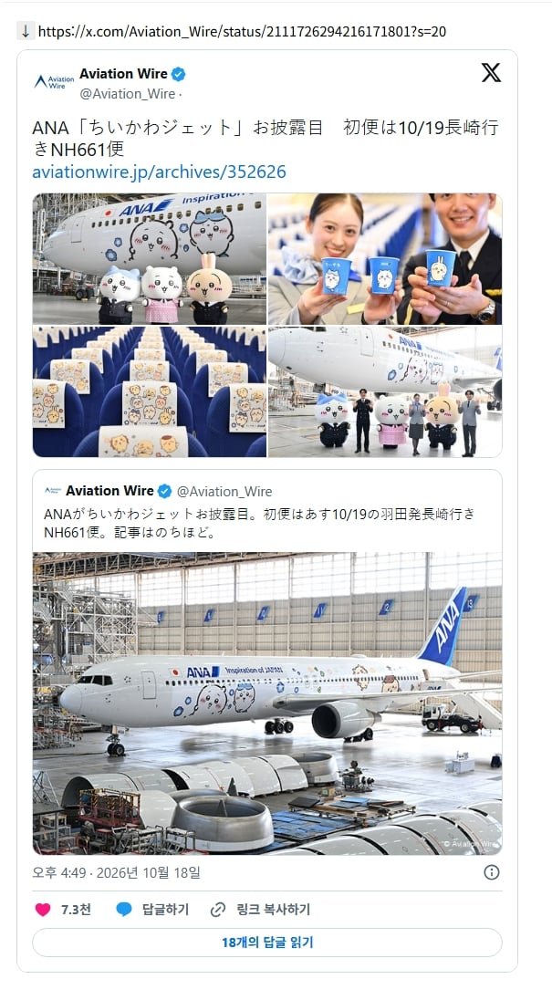
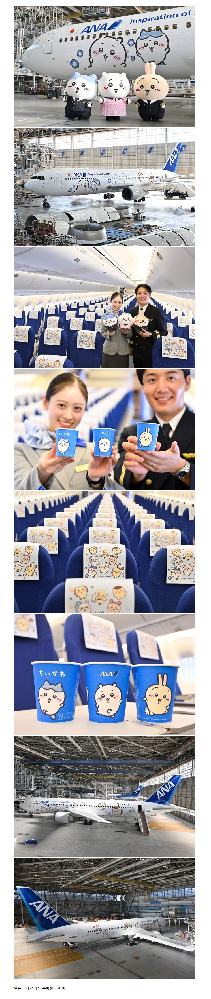

우 우 우와
영화 끝나고 우사기가 페라리 타고 퇴근한다는게 사실이었네 ㅋㅋ 이제는 전용기까지
토벌대 항공기다!
있잖아, 가깝지 않아?
지면!
Whoop, Whoop, Pull up! Whoop, Whoop, Pull up!
어떻게든 되어라~!
존나 하치와레네 ㅋㅋㅋ


나가노작가 연 수입 최소치 연 6억엔이라더니 찐일듯..
일본에서 만화가라는 직업은 진짜 어나더레벨이니까... 씹다도 돈 개많이벌지않았나
치이카와 만화 자체는 무료인데 캐릭터 상품관련해서 작가 본인이 지분 100프로인걸로 알고있음
지금 뭐 한국, 일본, 홍콩 등등 온갖데서 왕창 팔리니 진짜 말도안되게 벌고있을 듯
만화가가 잘버는게 아니라 나가노가 잘버는거임. 지분 100%라서 다른곳에 뺏기는게 없으니까.
일반적인 만화가들은 애니화 해도 보통 50만엔인가 100만엔인가 받고 쫑이라더라고.
어나더 레벨만 많이벌지 ㅋㅋ
월 6억이라고 해도 믿을듯

웰컴드링크 마시고 밤만쥬 리액션을...
항공기에 커여운 캐릭터 그려져있는 항공사는 타면 안 된다는 말 본거같은데 ㅋㅋㅋ 치이카와는 다르지
아나 너프하라고 시발 이제 날아다니네
전용기도 있어?
페라리타고 퇴근? 검소한거였네
팝콘통좀 풀어주시오..
우 우냐냐 우냐 우냐냐 야하야하 뿌륏
이제 전용기타고 퇴근하겠구만..
아 저 우사기 컵으로 주세요. 아뇨 그냥 컵만 주세요.
세계관 이야기 듣고는 아...
캐릭터 귀엽긴 해
비행기 안타도 되니깐 인형만 주시오
어떻게 항공사 이름이 아날 ㄷㄷ

귀여웡
이제 저것도 괴물화 가능?
우나나나 우나나나


우나!
ㄹㅇ 작가 얼마나 벌까..
기장 쿠리만쥬 부기장 시사
페라리로는 부족했는가..